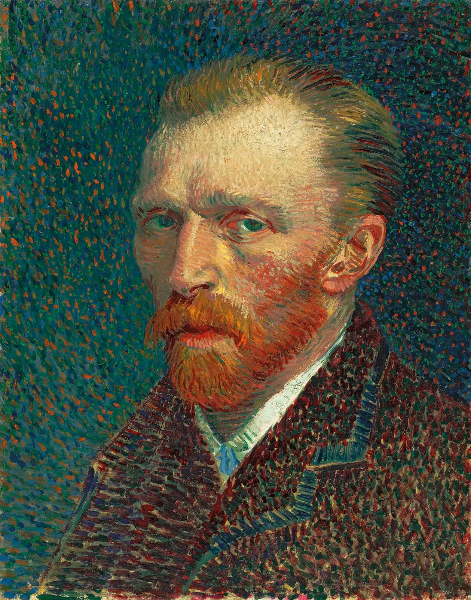

Vincent Van Gogh merupakan pelukis asal Belanda yang lahir pada 30 Maret 1853 dan anak kedua dari enam bersaudara. Aliran seni lukis yang dibawa Vincent Van Gogh adalah post-impressionism. Bahkan Van Gogh menjadi salah satu pionir yang memberikan pengaruh pada banyak aliran yang menyusul, seperti fauvism, neo impresionisme, dan lain-lain. Lukisan The Starry Night miliknya menjadi karya paling populer sampai saat ini. Lukisan tersebut menggambarkan pemandangan sebuah desa pada malam hari dengan langit yang dihiasi cahaya bintang dan bulan. Lukisan The Starry Night menyuguhkan keindahan sekaligus rasa sedih dan haru yang mendalam pada diri Van Gogh.
Siapa sangka, di balik lukisan yang sangat indah tersebut ternyata menyimpan kisah pilu dari Vincent Van Gogh. Dikutip dari Encyclopaedia Britannica (2020), Van Gogh melukis The Starry Night selama 12 bulan saat Ia tinggal di rumah sakit jiwa. Lukisan ini terinspirasi oleh perasaan kesepian dan kegelisahan Van Gogh saat berada di rumah sakit jiwa daerah Saint-Rémy-de-Provence di negara Prancis yang mendorongnya untuk mencurahkan emosinya melalui sapuan kuas yang dinamis. Tepatnya beberapa bulan setelah menderita gangguan di mana ia memotong sebagian dari telinganya sendiri dengan silet. Di rumah sakit jiwa, Van Gogh mengamati langit malam dari jendela kamarnya yang berjeruji dan menulis surat pada Theo (saudaranya) yang menggambarkan pemandangan indah bintang pada suatu pagi di musim panas tahun 1889. Van Gogh tidak diizinkan untuk melukis di kamarnya. Karena itu, Van Gogh melukis pemandangan itu dari ingatan dan menggunakan imajinasinya untuk melukis desa kecil yang sebenarnya tidak ada. Melalui lukisan ini, Van Gogh mengatakan bahwa malam lebih berwarna daripada siang dan bahwa bintang-bintang lebih dari sekadar titik-titik putih di atas hitam, bukannya tampak kuning, merah muda atau hijau. Baca selengkapnya disini
Informasi mengenai ciri khas lukisan The Starry Night didasarkan pada analisis sejarah seni dan catatan teknis dari institusi seni terkemuka. Berikut adalah sumber-sumber utama yang digunakan:
Teknik yang digunakan:

"Jika Anda mendengar suara di dalam diri Anda berkata 'Anda tidak bisa melukis,' maka lukislah dan suara itu akan terbungkam."